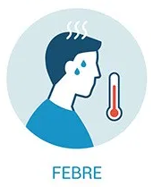
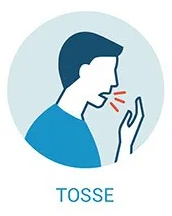

Coronavirus - Sintomas
Os sintomas da COVID-19 podem variar de um resfriado, a uma Síndrome Gripal-SG (presença de um quadro respiratório agudo, caracterizado por, pelo menos dois dos seguintes sintomas: sensação febril ou febre associada a dor de garganta, dor de cabeça, tosse, coriza) até uma pneumonia severa. Sendo os sintomas mais comuns:
- Tosse
- Febre
- Coriza
- Dor de garganta
- Dificuldade para respirar
- Cansaço
- Diminuição do apetite
- Dispnéia
- Alteração do paladar
- Distúrbios gastrintestinais
A transmissão acontece de uma pessoa doente para outra ou por contato próximo por meio de:
- Toque do aperto de mão contaminadas
- Gotículas de saliva
- Espirro
- Tosse
- Catarro
Em crianças, além dos itens anteriores, considera-se também a obstrução nasal, a desidratação e a falta de apetite (inapetência), na ausência de outro diagnóstico específico. Em idosos, deve-se considerar também, critérios específicos de agravamento como: síncope (desmaio ou perda temporária de consciência), confusão mental, sonolência excessiva, irritabilidade e falta de apetite (inapetência).